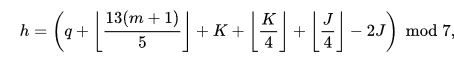

Day of the Week Calculator
This is an example of calculating the day of the week from a numerical date.
Implementing Zeller's Congruence using JavaScript
Zeller's Congruence classic equation
Zeller used decimal arithmetic
- h is the day of the week where 0 = Sunday and 6 = Saturday
- q is the day of the month
- m is the month, which must be adjusted as JavaScript getMonth() indexes as January as month 0
- K is the year of the century, (year modulus 100)
- J is the year divided by 100
Zeller's Congruence converted for easier computational implementation
"J" and "K" are calculated using the standard year which introduces some additional modifications such as treating January and February as months 13 and 14 of the previous year. "-2J" is converted to "+5J" to avoid negative numbers and is simply advancing the days by 7 which still results in the same day of the week and avoids taking the modulus of a negative number which bothers our JavaScript but which Zeller appears not to have minded.